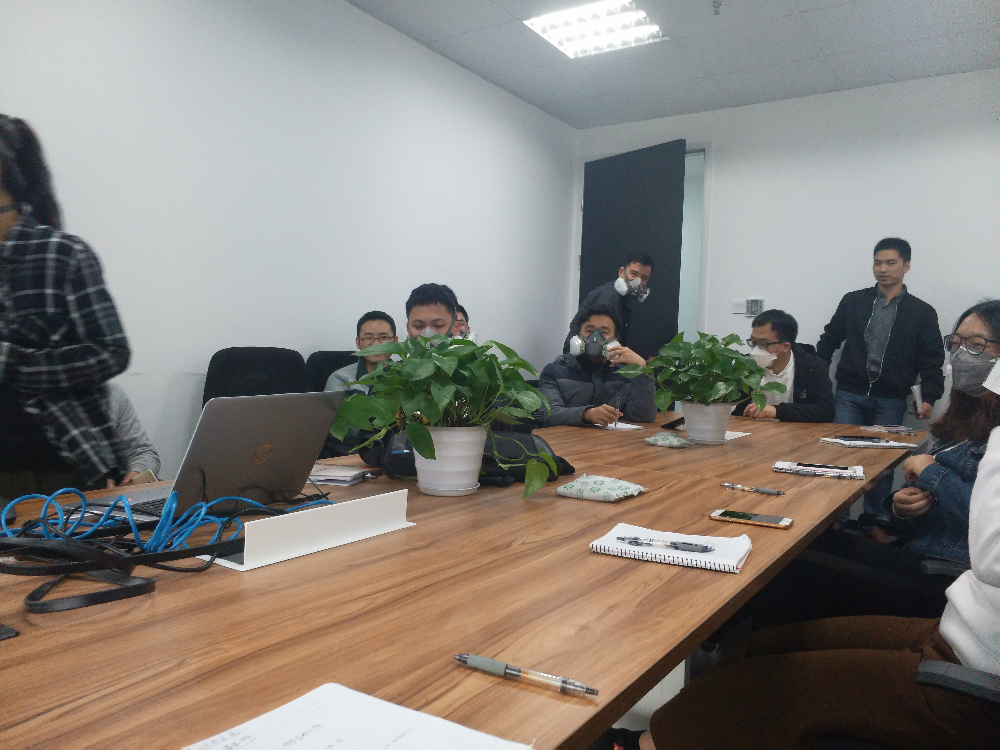

 <!DOCTYPE HTML>
<html lang="zh-CN,en-US,default">
<head><meta name="generator" content="Hexo 3.9.0">
  <meta charset="UTF-8">
  
    <title>我的2017 | 山间听雨者主页</title>
    <meta name="viewport" content="width=device-width, initial-scale=1, maximum-scale=3, minimum-scale=1">
    
    <meta name="author" content="Daniel">
    
    <meta name="description" content="努力寻找生命中的那个她不知道是月老醉酒醒了，还是贪玩的丘比特长大了？我发现我开始有了要找一个生命中的那个她的冲动。可能使上天的眷顾，又或者我的真心诚意，反正这一年我有了很多机会，比过去这25年的机会都还要多。先生春节回深圳不久，在公司食堂排队吃早饭，我入迷的玩着手机，突然前面的一个同事回过头问我：同">
    
    
    
    
    <link rel="alternative" href="/atom.xml" title="山间听雨者主页" type="application/atom+xml">
    
    
    <link rel="icon" href="/img/abao.jpg">
    
    
    <link rel="apple-touch-icon" href="/img/abao.jpg">
    <link rel="apple-touch-icon-precomposed" href="/img/abao.jpg">
    

  
    <link href="/css/font-awesome.min.css" rel="stylesheet">
    
  

    <link rel="stylesheet" href="/css/style.css">
    <script>
var _hmt = _hmt || [];
(function() {
  var hm = document.createElement("script");
  hm.src = "//hm.baidu.com/hm.js?d182ed77fc48758bf45a33835ee35745";
  var s = document.getElementsByTagName("script")[0]; 
  s.parentNode.insertBefore(hm, s);
})();
</script>

      <script type="text/javascript">
  (function(w,d,t,u,n,s,e){w['SwiftypeObject']=n;w[n]=w[n]||function(){
  (w[n].q=w[n].q||[]).push(arguments);};s=d.createElement(t);
  e=d.getElementsByTagName(t)[0];s.async=1;s.src=u;e.parentNode.insertBefore(s,e);
  })(window,document,'script','//s.swiftypecdn.com/install/v1/st.js','_st');

  _st('install','.............Add your swiftype userID...............');
</script>
</head>
</html>
  <body>
    <header>
      <div>
		
			<div id="textlogo">
				<h1 class="site-name"><a href="/" title="山间听雨者主页">山间听雨者主页</a></h1>
				<h2 class="blog-motto">个人学习总结</h2>
			</div>
			<div class="navbar"><a class="navbutton navmobile" href="#" title="菜单">
			</a></div>
			<nav class="animated">
				<ul>
                    <ul>
					 
						<li><a href="/">首页</a></li>
					
						<li><a href="/archives">归档</a></li>
					
						<li><a href="/images">图片</a></li>
					
						<li><a href="/aboutme">关于</a></li>
					
					<li>
					
						<form class="search" action="/search/index.html" method="get" accept-charset="utf-8">
						<label>Search</label>
						<input type="text" id="st-search-inpu" maxlength="20" placeholder="Search" />
						</form>
					
					</li>
                <!--<li><div class="closeaside"><a class="closebutton" href="#" title="隐藏侧边栏"></a></div></li>-->

				</ul>
			</nav>	
</div>
    </header>
    <div id="container" class="clearfix">
      <div id="main" class="post" itemscope itemprop="blogPost">
	<article itemprop="articleBody"> 
		<header class="article-info clearfix">
  <h1 itemprop="name">
    
      <a href="/2018/01/04/我的2017/" title="我的2017" itemprop="url">我的2017</a>
  </h1>
  <p class="article-time">
    <time datetime="2018-01-04T13:38:00.000Z" itemprop="datePublished">2018-01-04</time>
  </p>
</header>
	<div class="article-content">
		
		
		<div id="toc" class="toc-article">
			<strong class="toc-title"></strong>
		<ol class="toc"><li class="toc-item toc-level-1"><a class="toc-link" href="#努力寻找生命中的那个她"><span class="toc-number">1.</span> <span class="toc-text">努力寻找生命中的那个她</span></a></li><li class="toc-item toc-level-1"><a class="toc-link" href="#努力让自己更优秀"><span class="toc-number">2.</span> <span class="toc-text">努力让自己更优秀</span></a></li><li class="toc-item toc-level-1"><a class="toc-link" href="#努力挣钱"><span class="toc-number">3.</span> <span class="toc-text">努力挣钱</span></a></li><li class="toc-item toc-level-1"><a class="toc-link" href="#总结"><span class="toc-number">4.</span> <span class="toc-text">总结</span></a></li></ol>
		</div>
		
		<p></p>
<h1 id="努力寻找生命中的那个她"><a href="#努力寻找生命中的那个她" class="headerlink" title="努力寻找生命中的那个她"></a>努力寻找生命中的那个她</h1><p>不知道是月老醉酒醒了，还是贪玩的丘比特长大了？我发现我开始有了要找一个生命中的那个她的冲动。可能使上天的眷顾，又或者我的真心诚意，反正这一年我有了很多机会，比过去这25年的机会都还要多。<br>先生春节回深圳不久，在公司食堂排队吃早饭，我入迷的玩着手机，突然前面的一个同事回过头问我：同学，我开忘带，能借你的工卡给我刷下吗？我下意识的把卡给了她，甚至都没抬下头。她买好早饭后把卡还给我，我又一次没有抬头，眼睛盯着手机看，顺手接过了她递过来的工卡，这个时候心里闪过一丝心动，哦，是个妹子，不过我却错过了，都不知道长得怎么样，能否有机会。有可能是天注定要单着呗，这么好的机会居然没有把握住。吃完早饭会办公室的时候无意间和同事聊到这件事，一个妹子借了我卡刷，我居然不知道她长什么样，完美的错过了一次脱单机会。<br>可能是祖宗显灵，希望我能早日完成一件人生大事吧，那个妹子居然在公司的论坛（从不晓得公司有员工交流的论坛）问道我，我之前告诉的那个同事很是会来事，马上把那个妹子的腾讯通上的头像截图给我。哇，多漂亮的一个妹子，真他吗后悔没有多看一眼。多年的单生生活是有一定的原因的，机会到了眼前还是让他丢了。<br>后续尝试联系过这个妹子，但也仅限于微信了。然后就没有然后了。<br>你以为我的单生生活还要继续？错，你们应该都想错了。<br>隔没多久时间，我妹妹说她一个女同学想谈恋爱了，毕竟年龄的原因。我也打算接触下，因为距离较远，所以我妹给我的是她的同学的微信，我们就先在微信上聊天，聊得还算投机。我也觉得这个妹子不错，寻思着今年准能脱单了。<br>桃花运，有时确实是用什么方法都挡不住的。<br>这不，和妹介绍的聊着，家里我老妈又给我物色了一个，既然都不知道是否有能成功的，索性也聊着，所以今年的有段时间我是在同时和多个妹子聊天，只是纯聊天，因为都还没有确定身份，渣男是不存在的，如果只要有一个顶下来了，我会放弃另一个的，毕竟只是聊天。</p>
<h1 id="努力让自己更优秀"><a href="#努力让自己更优秀" class="headerlink" title="努力让自己更优秀"></a>努力让自己更优秀</h1><p>现在所在的公司是毕业就来的，所做的行业还是比较传统的，个人觉得发展空间有限，打算提升下自己找一份有挑战性的工作，所以年中的时候自己就开始准备，学习一些行业里比较流行的知识，为将来换工作打下基础。<br>由于工作不是很忙，所以年初就给自己定了一个目标就是要看50本书，坚持周末跑步锻炼身体。年底总结了下，虽然书没有看够50本，但是30本也是有的，还得加油。</p>
<h1 id="努力挣钱"><a href="#努力挣钱" class="headerlink" title="努力挣钱"></a>努力挣钱</h1><p>尽管我现在很穷，但我仍然需要肯定我今年全年挣钱的决心的。想学理财，贷款买了股票，可是股票血亏，欠着银行的几万块，心里虽然慌，但也是无奈啊。<br>钱不在多，努力即可，关键是要学会理财，这次买股票亏，原因就是缺乏理财知识，盲目投资。</p>
<h1 id="总结"><a href="#总结" class="headerlink" title="总结"></a>总结</h1><p>2017过得很快，收获有，遗憾有，成长也有！</p>
  
	</div>
		<footer class="article-footer clearfix">

  <div class="article-tags">
  
  <span></span> <a href="/tags/生活/">生活</a>
  </div>


<div class="article-categories">
  <span></span>
  <a class="article-category-link" href="/categories/随笔/">随笔</a>
</div>


<div class="article-share" id="share">

  <div data-url="https://github.com/danielfengyu/danielfengyu.github.io/2018/01/04/我的2017/" data-title="我的2017 | 山间听雨者主页" data-tsina="" class="share clearfix">
  </div>

</div>
</footer>   	       
	</article>
	
<nav class="article-nav clearfix">
 
 <div class="prev" >
 <a href="/2018/01/07/学习JMS/" title="学习JMS">
  <strong>新一篇:</strong><br/>
  <span>
  学习JMS</span>
</a>
</div>


<div class="next">
<a href="/2018/01/01/JavaWeb-关键知识点答疑/"  title="JavaWeb 关键知识点答疑">
 <strong>旧一篇:</strong><br/> 
 <span>JavaWeb 关键知识点答疑
</span>
</a>
</div>

</nav>

	
<section class="comment">
	
	<div class="ds-thread" data-title="我的2017" data-thread-key="我的2017" data-author-key="Daniel" data-url="https://github.com/danielfengyu/danielfengyu.github.io/post/我的2017"></div>
	
</section>


</div>  
    </div>
    <footer><div id="footer" >
	<div class="copyright">
		<span>Powered by <a href="https://github.com/hexojs/hexo">Hexo</a> and theme by 
		<a href="https://github.com/levonlin/Tinnypp">Tinnypp</a>.</span>
		
			<span>© Daniel/山间听雨者</span>
		
	<div>
</div></footer>
    <script src="/js/jquery-2.1.0.min.js"></script>
<script type="text/javascript">
$(document).ready(function(){ 
  //back to top
  function backToTop(){
    var buttonHTML = $("<a href=\"#top\" id=\"back-top\">" + "<span>Back to Top</span></a>");
    buttonHTML.appendTo($("body"));
    var buttonToTop = $("#back-top");
    // hide #back-top first
    buttonToTop.hide();

    // fade in #back-top
    $(function() {
        $(window).scroll(function() {
            if ($(this).scrollTop() > 200) {
                buttonToTop.fadeIn();
            } else {
                buttonToTop.fadeOut();
            }
        });
        // scroll body to 0px on click
        buttonToTop.click(function() {
            $('body,html').animate({
                scrollTop: 0
            }, 800);
            return false;
        });
    });
  }
  backToTop();

  $('.navbar').click(function(){
    $('header nav').toggleClass('shownav');
  });
  var myWidth = 0;
  function getSize(){
    if( typeof( window.innerWidth ) == 'number' ) {
      myWidth = window.innerWidth;
    } else if( document.documentElement && document.documentElement.clientWidth) {
      myWidth = document.documentElement.clientWidth;
    };
  };
  var m = $('#main'),
      a = $('#asidepart'),
      c = $('.closeaside'),
      ta = $('#toc.toc-aside');
  $(window).resize(function(){
    getSize(); 
    if (myWidth >= 1024) {
      $('header nav').removeClass('shownav');
    }else
    {
      m.removeClass('moveMain');
      a.css('display', 'block').removeClass('fadeOut');
        
    }
  });

  var show = true;
  c.click(function(){
    if(show == true){
        a.addClass('fadeOut').css('display', 'none');
        ta.css('display', 'block').addClass('fadeIn');
        m.addClass('moveMain');  
    }else{
        a.css('display', 'block').removeClass('fadeOut').addClass('fadeIn');     
        ta.css('display', 'none'); 
        m.removeClass('moveMain');
        $('#toc.toc-aside').css('display', 'none');
    }
    show = !show;
  });
});
</script>

<script type="text/javascript">
$(document).ready(function(){ 
  var ai = $('.article-content>iframe'),
      ae = $('.article-content>embed'),
      t  = $('#toc'),
      h  = $('article h2')
      ah = $('article h2'),
      ta = $('#toc.toc-aside'),
      o  = $('.openaside'),
      c  = $('.closeaside');
  if(ai.length>0){
    ai.wrap('<div class="video-container" />');
  };
  if(ae.length>0){
   ae.wrap('<div class="video-container" />');
  };
  if(ah.length==0){
    t.css('display','none');
  }else{

    $(window).scroll(function(){
      ta.css("top",Math.max(140,240-$(this).scrollTop()));
    });
  };
});
</script>


<script type="text/javascript">
$(document).ready(function(){ 
  var $this = $('.share'),
      url = $this.attr('data-url'),
      encodedUrl = encodeURIComponent(url),
      title = $this.attr('data-title'),
      tsina = $this.attr('data-tsina');
  var html = [
  '<a href="#" class="overlay" id="qrcode"></a>',
  '<div class="qrcode clearfix"><span>扫描二维码分享到微信朋友圈</span><a class="qrclose" href="#share"></a><strong>Loading...Please wait</strong></div>',
  '<a href="#textlogo" class="article-back-to-top" title="Top"></a>',
  '<a href="https://www.facebook.com/sharer.php?u=' + encodedUrl + '" class="article-share-facebook" target="_blank" title="Facebook"></a>',
  '<a href="#qrcode" class="article-share-qrcode" title="QRcode"></a>',
  '<a href="https://twitter.com/intent/tweet?url=' + encodedUrl + '" class="article-share-twitter" target="_blank" title="Twitter"></a>',
  '<a href="http://service.weibo.com/share/share.php?title='+title+'&url='+encodedUrl +'&ralateUid='+ tsina +'&searchPic=true&style=number' +'" class="article-share-weibo" target="_blank" title="Weibo"></a>',
  '<span title="Share to"></span>'
  ].join('');
  $this.append(html);
  $('.article-share-qrcode').click(function(){
    var imgSrc = $('#qrcode-pic').attr('data-src');
    $('#qrcode-pic').attr('src', imgSrc);
    $('#qrcode-pic').load(function(){
        $('.qrcode strong').text(' ');
    });
  });
});     
</script>


<script type="text/javascript">
  var duoshuoQuery = {short_name:"tinnypp"};
  (function() {
    var ds = document.createElement('script');
    ds.type = 'text/javascript';ds.async = true;
    ds.src = '//static.duoshuo.com/embed.js';    //change to ds.src = '/js/embed.js'; to add useragent for duoshuo
    ds.charset = 'UTF-8';
    (document.getElementsByTagName('head')[0] 
    || document.getElementsByTagName('body')[0]).appendChild(ds);
  })();
</script> 


<link rel="stylesheet" href="/fancybox/jquery.fancybox.css" media="screen" type="text/css">
<script src="/fancybox/jquery.fancybox.pack.js"></script>
<script type="text/javascript">
$(document).ready(function(){ 
  $('.article-content').each(function(i){
    $(this).find('img').each(function(){
      if ($(this).parent().hasClass('fancybox')) return;
      var alt = this.alt;
      if (alt) $(this).after('<span class="caption">' + alt + '</span>');
      $(this).wrap('<a href="' + this.src + '" title="' + alt + '" class="fancybox"></a>');
    });
    $(this).find('.fancybox').each(function(){
      $(this).attr('rel', 'article' + i);
    });
  });
  if($.fancybox){
    $('.fancybox').fancybox();
  }
}); 
</script>

<script type="text/javascript">
  function footerPosition() {
    var contentHeight = document.documentElement.scrollHeight,
        winHeight = window.innerHeight;
    if(contentHeight <= winHeight) {
      $('footer').addClass('fixed-bottom');
    } else {
      $('footer').removeClass('fixed-bottom');
    }
  }
  footerPosition();
  $(window).resize(footerPosition);
</script>


  </body>
</html>
